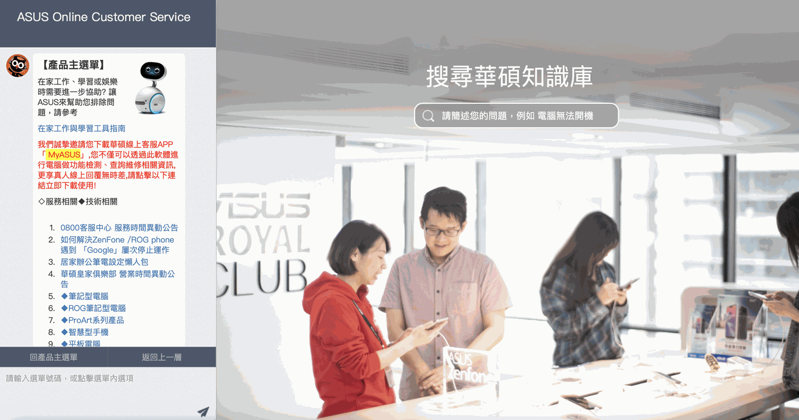
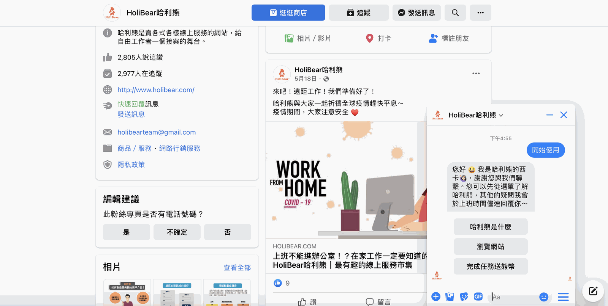
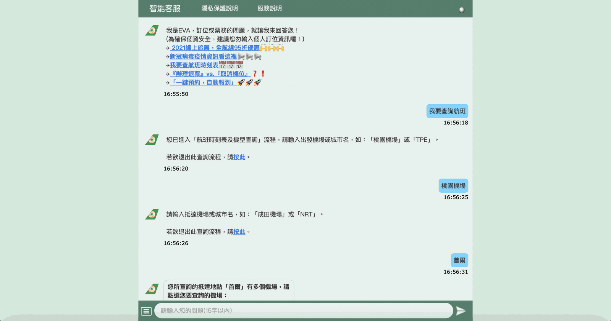
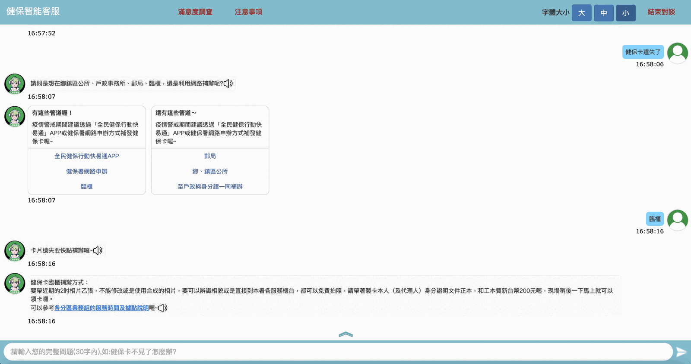
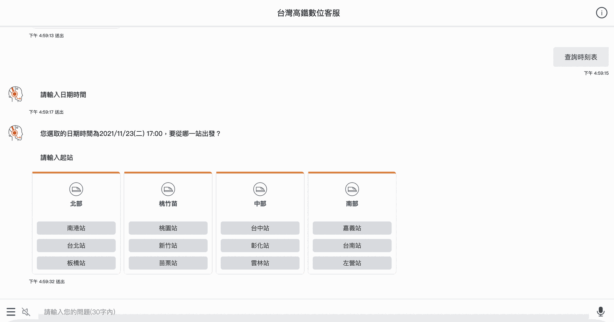

一、聊天機器人(對話機器人)是什麼？
聊天機器人(稱為：智能客服、對話機器人、智慧客服、ChatBot)，是以人工智慧技術為基礎的問答與對話技術，為使用者與各種應用服務的溝通介面 。目前已實際應用於金融、物流、零售等多種產業及政府公家機關，各大企業品牌廣泛應用在官網、社群平台及通訊軟體上，有助於提升使用者或消費者對品牌的好感度及黏著度。
二、聊天機器人可以為企業帶來什麼效益？
1.提供全天候服務
許多企業因使用者諮詢流量過於龐大，不僅得安排客服人員，更可能要安排24小時輪班人力，才能滿足消費者即時服務的需求，卻造成企業負擔更多人事成本。藉由聊天機器人透貴對話分擔客服工作，不僅減少人事成本支出，也能讓使用者獲得隨時隨地高品質的服務。
2.客製化的對話設計
可透過聊天機器人的對話資料庫進行對話設計，讓智能客服彷彿真人客服一般與使用者對談。更可滿足企業品牌需求量身打造，無論是品牌塑造、配合線上促銷活動、線下實體活動、政策推廣等，建置企業品牌專屬的智能客服。
3.建立使用者名單
擁有使用者名單，才能進一步推播行銷訊息及促銷活動。然而如何掌握名單一直是企業品牌苦惱的難題。透過設置智能客服，便能透過社群平台與使用者的互動中獲取使用者資訊。甚至可以依據使用者採取的行動，間接描繪單一使用者的特徵。
三、聊天機器人的類型有哪些？
以觸發方式分類：意圖式機器人/互動選單式機器人/關鍵字式機器人
(1)意圖式機器人 ( Intent-Based Chatbot )
意圖式機器人的核心技術為自然語言理解(NLU)，主要透過判定使用者手動輸入問句的意圖，以決定要執行什麼動作回應使用者。
意圖式機器人 – 聊天機器人範例：以台北富邦銀行為例
透過智能客服邦妮，讓客戶比起使用網路銀行的服務，更加便捷人性化。回答準確度高達90%，大幅降低人力服務成本，包含線上資料查詢、信用卡紅利點數、帳單分期等功能，獲得客戶絕佳好評！邦妮可以根據使用者的詢問語句，辨識使用者的問句的目的，給予相對應的答案。更可以自動帶出其他關聯性高、可能被問到的問題供使用者選擇，提高服務體驗的滿意度，進而提升對品牌的好感。
(2)互動選單式機器人
提供層級式選單引導式自助服務，使用者可以透過對話機器人的對話流程引導得到正確的回應，減少服務人員的介入。
可藉由對話腳本設計引導使用者完成特定的服務或諮詢，但通常無法處理使用者隨意手動輸入的內容。
互動選單式機器人 – 聊天機器人範例：以華碩為例

(3)關鍵字式機器人
當使用者輸入的語句中涵蓋預設的特定關鍵字，即會被觸發回應。
關鍵字式機器人 – 聊天機器人範例：以哈利熊為例
當使用者在哈利熊的FB Messenger聊天機器人說「文案」，哈利熊就會自動傳送一份免費行銷文案寫作大全的電子書給使用者。

以對話設計分類：流程式/自然語言理解式
(1) 流程式聊天機器人(Flow-Based Chatbot)
在對話流程中，可藉由對話腳本設計引導使用者完成特定的服務或諮詢。使用者可透過對話機器人的對話流程引導得到正確的回應。
但通常於某一對話流程中，若使用者尚未完成對話流程則無法跳脫該框架，智能客服會一直反覆詢問使用者同一問題，直到對話完成。
流程式對話機器人 – 聊天機器人範例：以長榮航空為例
長榮航空採用全方位客服中心，讓旅客輕鬆獲得解答，並讓分散全球各地的客服人員，完整整合話務、客服管理流程，將各類型客戶(旅行社、企業客戶、個人熟客)等資料，透過系統資料庫，同步給全球各地的櫃檯與服務據點，大幅提升服務專業化、精緻化及客戶整體滿意度。

(2)自然語言理解聊天機器人 ( Intent-Based Chatbot )
可以根據自然語言處理技術 ( Natural Language Processing) 層面，分析理解使用者的語句中的重要資訊完成對話流程，並給予相對的回應。當使用者於對話流程中聊到別的話題，智能客服也可以根據使用者的語句給予對話以外的回應。
自然語言理解對話機器人 – 聊天機器人範例：以健保署為例
應COVID-19 影響，民眾諮詢服務專線總進線量近30萬通，健保署導入智能文字客服機器人（阿Ken）為國人24小時服務，可應用問答範圍包括：健保業務及武漢肺炎疫情，比方：健保卡遺失、加退保作業、健保費繳納、醫療費用核退、口罩實名制購買及健保費緩繳措施等。阿Ken能正確判斷使用者現在想幹嘛並做出相對應動作，面對用戶意圖突然的轉變能做出相對應的回覆，更像是在跟真人對話，使用者體驗更好。

3. 以服務內容分類：閒聊型/專業服務型
(1)閒聊式機器人 (Chit-Chat Chatbot)
主要目的是陪伴使用者閒聊，可以讓使用者在體驗上更具親切感，讓機器人有擬真的效果。
閒聊式機器人 (Chit-Chat Chatbot) – 以SimSimi 為例
SimSimi是一個可愛的智慧型聊天機器人(自動聊天機器人、線上聊天機器人)，他能和用戶進行有趣的對話！可以讓用戶在輸入完畢對話內容後快速做出回應，並且還能教導SimSimi一些不會的問題答案，更增加了軟體的樂趣。
(2)專業服務型機器人 (Business Bot)
在特定領域或條件下提供訊息或服務的智能客服，其功能為滿足帶有明確目的的使用者，協助分析客戶的問題並給予最終的答案。
專業服務型機器人 – 聊天機器人範例：以台灣高鐵為例
台灣高鐵數位客服，即為透過問句引導，逐步協助使用者完成查票、訂票等任務，提供旅客24小時、全年無休的常用問題諮詢及個人化服務申請與查詢服務。

四、聊天機器人未來的趨勢
機器人設計正在迅速發展，我們將在許多領域看到變化和進步。我們正處於充滿著智能客服的時代，而對話機器人必將給行業帶來新的機遇和挑戰。在未來我們會看到更多的機器人出現在生活中，機器人將無所不在，且讓我們的生活更美好。不管機器人呈現的形式是哪種類型，你都要先確定使用 Chatbot 對話機器人的目標是什麼！再來才是選擇 Chatbot 對話機器人的型態，讓 Chatbot 的存在能夠實際為你帶來價值！
觀看更多聊天機器人推薦文章